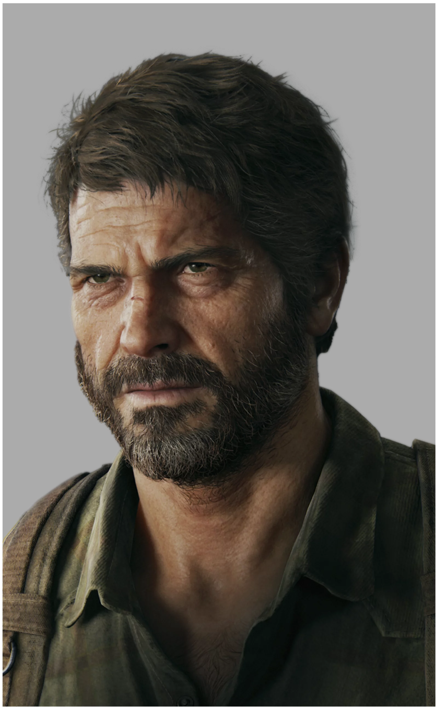

Joel Miller
Joel Miller es el protagonista del videojuego The Last of Us (2013), un personaje secundario en The Last of Us: Left Behind y The Last of Us Part II, con quien puedes jugar al principio de la segunda entrega del juego, y que próximamente veremos en la serie de televisión de HBO Max, The Last of Us, protagonizada por Pedro Pascal (Game Of Thrones, Narcos). Se estrena el 15 de Enero de 2023.